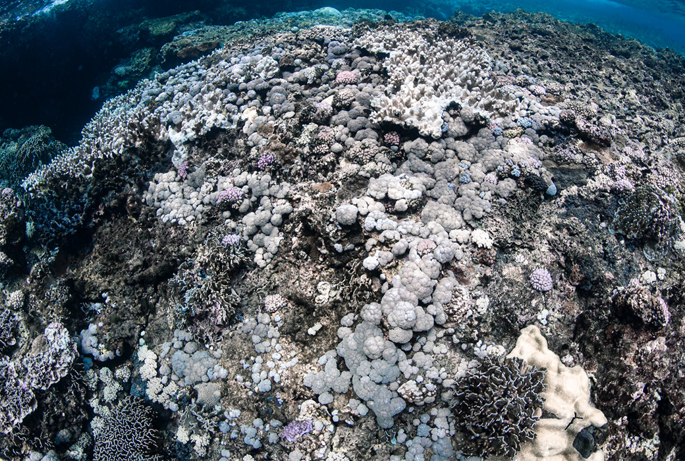

海洋暖化 珊瑚持續白化中 !

編輯部 2020/07/01
台灣珊瑚生態豐富，但近年因為氣候暖化，夏天水溫愈來愈高，造成生態資源最豐富的墾丁地區珊瑚白化，今年甚至連北部地區都首次出現，在北海岸核二廠附近有大量珊瑚白化，學者說，台灣珊瑚極具韌性，但在極端氣候變遷下，必須避免過度捕撈、棲地破壞、水質污染等外來的人為破壞因素，生態才得以延續。
【拯救珊瑚，你我都能盡力】
多數防曬用品中常含有二苯甲酮、甲氧基肉桂酸辛酯等化學物質，會嚴重干擾珊瑚的繁殖和生長週期，亦會影響蟲黃藻和珊瑚的關係，導致珊瑚白化，這些成份在我們進行海上活動或是洗澡、洗臉時，會隨著海水、污水系統排放，流入海中而被珊瑚吸收。